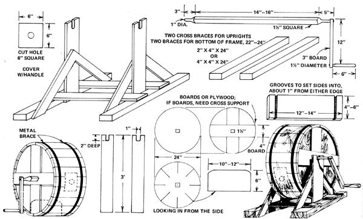

As I was looking through MOTHER's General Store Catalogue No. 4, I came to page 14 and noticed the electric butter churn and the footnote on the hand-cranked device. Boy, that took me back about 25 years!
I was born in Czechoslovakia, and all through World War II we used a wooden hand-cranked churn. The reason was that the modern machines had to be handed in so we couldn't make butter (the Reich needed all the cream). Fortunately, our old-fashioned gadget was quiet and the S.S. troops patrolling the area didn't hear any noise from the attic. So we sat there and turned and turned and listened to the "slosh-slop" until the beautiful hour when the butter was ready to be taken out and the buttermilk ready for drinking.
In case anyone's interested, I'll try to describe the homemade machine we used. I was only nine when the war ended, I admit, and my memory of the dimensions isn't quite what it should be. Maybe some other old-timers can remember better or improve on my instructions. Possibly my plans are no good, but here goes anyway!
The whole thing looked like a drum about two feet in diameter and about a foot deep, and rested on a support of 4 X 4's with some cross bracing to make it steady. Into the side was cut a six-inch-square hole through which the milk was poured in and the butter taken out. The plug which fitted into this opening was tapered, with the wider part outside, and we kept a clean cloth handy to put over the hole before pushing the stopper in.
The flat surfaces of the drum each had a square hole in the center through which a square axle was pushed.
The ends of the shaft were rounded (for ease of turning) where they were set into the uprights of the frame. A foot or so of three-inch board was fitted over one tip of the axle at right angles, and a short round peg was attached to the plank's other end for a handle.
About 19 pieces of four-inch lumber or 13 of six-inch would be needed to form the circumference of the churn. These boards have to be fitted together at a slight angle to make the circle, and I seem to recall than they were tongue and-grooved to prevent loss of flour through the joints. If the whole machine is soaked water before use, the wood will swell enough, I think. stop any leakage. A cloth lining for the drum would help, but I'm not sure that the interior could then properly cleaned to prevent odors which would spoil Ice cream. A metal brace might be fastened over the outs. of the machine to give it added strength.
The inside of the drum's curved surface was studded with maybe six or eight slightly rounded-off wooden paddles. They were almost as wide as the churn itself (about one foot), and jutted about six inches into the interior. The effect was something like a balding porcupine turned inside out.
We'd pour in the cream, plug the hole and just crank away while the paddles beat the contents into fresh, sweet butter and I honestly don't remember how long it took, but the time was well spent.
Well, there it is, and I hope somebody can use the information. Happy buttering or how about a part-time churn business?
Copyright (C) 2001-2002, Ogden Publications, Inc.
All rights reserved.
|
|
 |
|